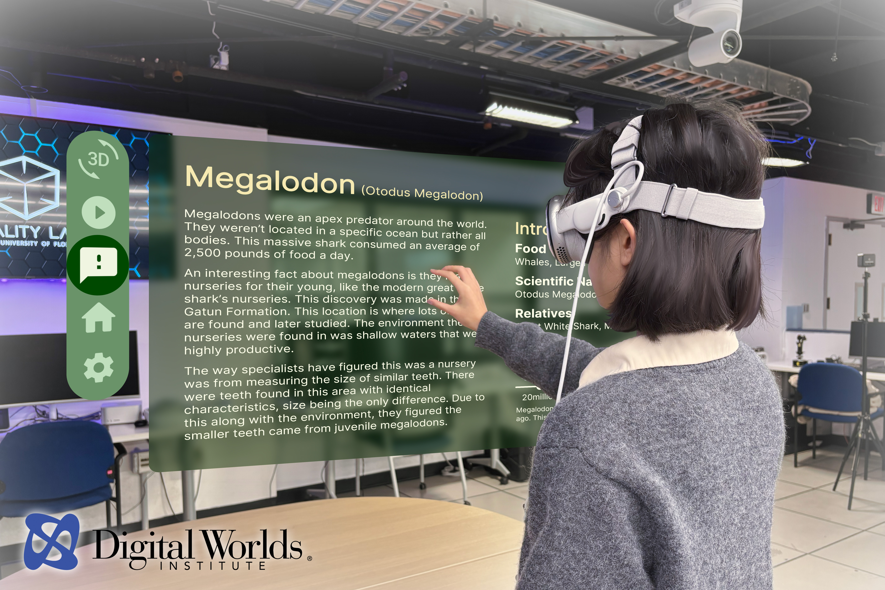
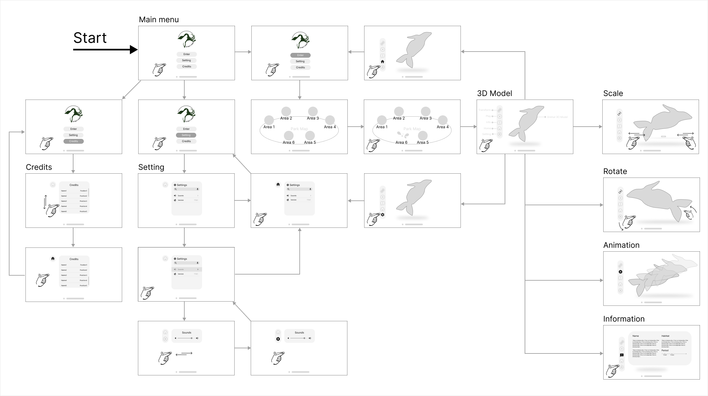

Xtinct Park
A mixed-reality museum experience for Apple Vision Pro that turns one-way, passive exhibits into a spatial encounter you can scale, rotate, and walk around — built on a 3D information architecture, and published at IEEE GEM 2025. 一款為 Apple Vision Pro 開發的混合實境博物館體驗，把單向、被動的展示，變成可縮放、可旋轉、可繞行的空間體驗，奠基於 3D 資訊架構，並發表於 IEEE GEM 2025。

The Overview專案基本資訊
Xtinct Park is a mixed-reality education app for Apple Vision Pro, made to break the one-way, passive way museums share knowledge. I deconstructed and rebuilt the user's mental model and interaction gestures in 3D space — using a spatial information hierarchy and a Unity build to turn extinct Florida species from scientific literature into perceivable, interactive spatial assets. Xtinct Park 是為 Apple Vision Pro 開發的虛實整合（MR）教育體驗，旨在打破傳統博物館單向、被動的資訊傳播。我解構並重塑 3D 空間中的使用者心智模型與互動手勢，透過 3D 資訊階層與 Unity 落地，將科學文獻中的佛州滅絕生物，轉化為可感知、可互動的空間數位資產。
Context & the core problem背景與核心挑戰
2D rules don't survive in a free-viewpoint 3D room2D 的設計法則，在自由視角的 3D 環境中會失效
Business context商業背景
Traditional museums (e.g. the Florida Museum of Natural History) are bound by physical space and 2D media — visitors passively read placards or follow audio tours, with no embodied sense of scale. As Apple Vision Pro brings the spatial-computing paradigm shift, using 3D mixed reality to remake "knowledge transmission" sits right where technology meets culture.傳統博物館（如佛羅里達自然歷史博物館）長期受限於實體空間與二維媒介，觀眾只能透過看牌卡、聽導覽被動接收，缺乏具象的體感認知。隨著 Apple Vision Pro 帶來空間運算的典範轉移，如何用 3D 混合實境重塑「知識傳播」，成為科技與文化交會處的核心課題。
3 Critical Pain Points Unique to 3D Spatial UX3D 自由視角的三大痛點
Spatial Disorientation & Cognitive Overload空間迷航與認知過載
Upon donning the spatial computing headset, users are immediately cast into an unanchored 3D canvas. Without traditional 2D web patterns or a persistent "Home" anchor to ground their initial gaze, users face instant decision paralysis, unsure of where to initiate interaction within the immersive environment.一戴上設備，面對全三維環境，缺乏傳統應用的「Home」心理定錨點，不知從何開始。
Broken Affordance & Tactile Privation傳統 UI 語意失效
Flat 2D UI elements lose their behavioral semantics in room-scale space due to a total lack of physical haptic feedback. Directly bolting arbitrary, floating 2D informational placards (such as a flat Megalodon encyclopedia board) into a 3D scene forces severe eye-focus fatigue and exhausting, ergonomic strain from repetitive "arm-waving" gestures.2D 按鈕在立體空間缺乏體感回饋；若直接硬搬 2D 看板（如巨齒鯊介紹面板），會造成眼球聚焦疲勞與手臂高舉的生理不適，同時這與遊客在傳統博物館只能「遠距離被動觀看、缺乏觸覺與體感」的觀展方式無異，只是把資訊面板搬到另一個媒介載體。
Visual clutter in passthrough虛實穿透的視覺干擾
In Mixed Reality, highly dynamic and cluttered physical backdrops — such as a user's living room or a chaotic lab space — severely destroy the contrast and readability of spatial interfaces. This demands an environment-adaptive UI layer that dynamically respects, maps, and survives the geometry of any unpredictable physical environment.實體房間（客廳、實驗室）的複雜背景會干擾介面可讀性，必須建立一套能融入任何物理環境的「環境適應型 UI」。

Discovery & Scope Prioritization產品探索與範疇收斂
From an unconstrained "Virtual Jurassic Ecosystem" to a performant core runtime從理想中的「虛擬侏羅紀生態系」，收斂為聚焦、流暢的核心體驗
The cross-functional team and academic advisors initially conceptualized an expansive pre-historic biome: multi-species behavioral swarms, synchronous multimodal gesture and eye tracking, room-scale physics collisions, and complex dynamic environment-fitting pipelines. However, rigid thermal, hardware compute budgets and time schedule forced an aggressive, strategic architectural pruning to protect the target refresh rate.初始團隊與學術指導預期一個龐大的「虛擬侏羅紀生態系」：多物種行為模擬、手勢與眼動控制、全場景物理碰撞，以及複雜的即時 3D 環境演算法適配。效能與時程現實逼出更精準的範疇。
- infoInformation reveal資訊揭露
- zoom_out_mapObject Scaling物件比例縮放
- 360360° Free spatial rotation模型自由旋轉
- animationSpecies animation trigger生物互動動態觸發
- mapSpatial map-based navigation (Park island)空間地圖導覽（園區島嶼）
- petsLarge-scale unconstrained multi-species behavior simulation大規模多物種行為動態模擬
- layersDecoupled two-layer scene architecture: standalone sandbox map + single focal mega-creature asset (e.g., Megalodon)收斂為雙層結構：單一沙盤地圖 + 焦點巨型生物（如巨齒鯊）
- back_handHigh-overhead composite sensor tracking and input matrixes天馬行空的追蹤複合式控制

Execution & landing it in Unity敏捷執行與技術落地
I didn't stop at Figma, I went into Unity and Xcode with the engineers我不只停在 Figma，更與工程深入 Unity 與 Xcode
2D UI semantics → 3D space2D 介面語意 → 3D 空間
I built the base panel architecture and UI components in Figma first. Then collaborating closely with engineering via Unity, visionOS, and Apple PolySpatial, I co-implemented advanced spatial micro-interactions: upon detecting a targeted gaze-and-pinch gesture, the virtual UI component responds with a contextual localized Z-axis depth displacement. This critical feedback loop physically anchors the digital asset within the room, directly mitigating the "tactile void" — the spatial detachment born from an absolute lack of physical haptic friction in mid-air operations.我先在 Figma 完成基礎流程架構，接著與工程協同，在 Unity + Xcode 實作：當使用者做出選擇手勢時，UI 物件會產生微量的Z 軸深度浮動，解決了空間缺乏物理觸感的「虛無感」。

Human-centered insight人性洞察
The frontier challenge of MR isn't graphics — it's the feeling of isolation前沿 MR 產品的人性挑戰，不是畫質，而是「空間孤立感」
Even without a formal user study, continuous room-scale wear-testing and technical reasoning surfaced a critical UX flaw: when a 3D creature simply floats rigidly within a space without acknowledging the physical layout, the digital asset and the physical environment feel starkly detached. This subtle cognitive dissonance flags the projection as an artificial "visual invasion," severely degrading immersion and the animal's sense of presence.即便沒有進行正式的用戶研究，持續的室內規模實機配戴測試與技術推演仍暴露出一個關鍵的 UX 缺陷：當一個 3D 生物只是死板地漂浮在空間中、無法感知周遭的物理佈局時，數位資產與物理環境之間便會產生強烈的剝離感。這種微妙的認知失調會被標記為一種人造的「視覺入侵」，進而嚴重破壞沉浸感與動物的存在感。
To bridge this gap, the lab team co-architected a "Distributed Behavioral Simulation Model" tightly coupled with real-time spatial mapping. By offloading flocking equations to GPU compute shaders, we unlocked smooth, performant rendering for dense fish schools. Rather than drifting blindly, the school directly perceives physical geometry — seamlessly executing obstacle avoidance and biologically panic simulation when interacting with a real sofa or user hand gestures. We effectively flipped a jarring visual imposition into an organic state of spatial co-existence.於為了解決這個落差，實驗室的人員共同構建了一個與即時空間映射緊密結合的「分散式行為模擬模型」。藉由將魚群演算法的公式運算分流至 GPU 計算著色器，我們成功為密集的魚群實現了流暢的算力渲染。這群魚不再是盲目漫遊，而是能直接感知物理幾何結構。當與真實沙發或使用者的手勢互動時，能天衣無縫地執行「自動避障」與「生物恐慌行為反應」。我們有效地將原本突兀的視覺強加，翻轉為一種和諧共生的「空間共存」狀態。
Deliverables & learnings專案產出與反思
What I delivered最終交付物
A running MR experience on Apple Vision Pro balancing Unity render performance with environment-aware dynamics — plus two academic papers accepted at IEEE GEM 2025.在 Apple Vision Pro 上執行、兼顧 Unity 渲染效能與環境動態感知的 MR 體驗，以及兩篇成功發表並收錄於 IEEE GEM 2025 的學術論文。
Publications學術發表
Xtinct Park: A Wearable Mixed Reality Technology to Educate Florida's Native Extinct Species
Utilizing Boids Simulation and Spatial Mapping to Enhance User Engagement in Mixed Reality Environment
Reflection & next steps反思與未來展望
The tight timeline left compromises — 2D boards still floating in the air. This taught me the highest form of spatial design is "let the environment become the interface."緊湊的時程留下了妥協：仍有 2D 看板懸浮在空中。這次經驗讓我深刻體會，空間產品設計的最高境界，是「讓環境成為介面」。
Auto-spawn a near 1:1 great white shark beside the user as a reference object — let scale and embodied contrast tell the story, instead of a label.讓系統自動在用戶身旁虛擬出接近 1:1 的大白鯊作為參照物，用視覺與空間的體感對比，讓生物自己「說故事」。
Fully deconstruct floating 2D menus — physicalize controls (volume, environment) onto the user's wrist or real gear, so adjusting the system is just touching your own wrist.徹底解構懸浮的 2D 選單。把音量、環境控制鈕「實體化」定錨在使用者手腕或真實裝備上，撫摸手腕即可調校系統，讓庶務與物理行為融為一體。